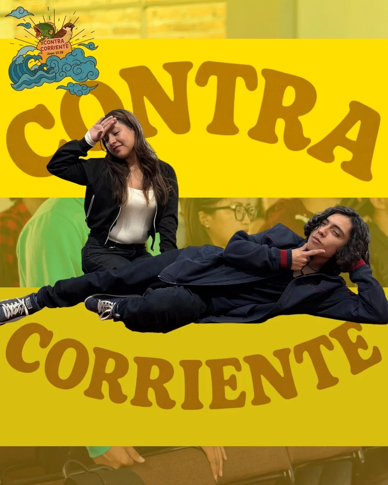

CONTRA
CORRIENTE
"Si fuerais del mundo, el mundo amaría lo suyo; pero porque no sois del mundo… por eso el mundo os aborrece."

"Si fuerais del mundo, el mundo amaría lo suyo; pero porque no sois del mundo… por eso el mundo os aborrece."

"No sois del mundo."
JUAN 15:19
ContraCorriente es para los que se atreven a ser diferentes. Vivir como Cristo viviría hoy, aunque eso signifique remar al revés del sistema.
Aquí aprendemos a no conformarnos, sino a transformarnos por la renovación de nuestra mente.
Descripción completa, propósito y testimonios del grupo.
Aquí irán los nombres y una breve presentación de los líderes del grupo.
Collage con fotos del grupo reunido, retiros y momentos especiales.
Ven, conócenos un sábado y forma parte de esta familia.
Escríbenos en Instagram Ver otros grupos